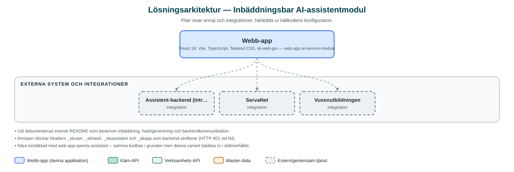

Inbäddningsbar AI-assistentmodul
En AI-assistentklient som bäddas in direkt i innehållet på en webbsida, som en sökruta där besökaren kan ställa frågor till en AI-assistent.
Om applikationen
Detta är en React-baserad klient för AI-assistenter som integreras direkt i befintliga webbsidor, placerad där det inbäddande elementet ligger i stället för som en flytande chattbubbla. Besökaren ställer sin fråga i modulen och får ett strömmat svar från assistenten.
Precis som systermodulen med chattbubbla byggs applikationen i olika lägen för olika verksamheter; i koden finns varianter för vuxenutbildningen och ServaNet med egna texter, logotyper och grafiska profiler. Modulen körs i shadow DOM som webbkomponent för att inte påverka den omgivande sidans utseende.
Kommunikationen sker mot en central assistent-backend där varje anrop verifieras med en signerad hash, vilket gör att modulen kan användas både publikt och på inloggade sidor som intranätet.
Det här stödjer applikationen
- AI-assistent i sidan – Modulen bäddas in mitt i innehållet och fungerar som en fråga-svar-ruta med AI.
- Strömmande svar – Svaren visas löpande medan de genereras (Server-Sent Events).
- Verksamhetsanpassning – Texter, logotyper och färger byts per verksamhet, t.ex. vuxenutbildningen och ServaNet.
- Säker anropsverifiering – Varje anrop signeras med hash av användare, assistent-id, appnamn och salt; fel hash ger avslag.
- Flexibel inbäddning – Kan köras som isolerad webbkomponent i shadow DOM eller inkluderas direkt på sidan.
Teknisk dokumentation
Nedan beskrivs hur applikationen är uppbyggd, vilka API:er den använder och vad som krävs för att driftsätta den. Informationen är härledd ur källkoden och dess konfiguration på GitHub.
Arkitektur

Applikationen är en webbaserad frontend (React 18, Vite, TypeScript, Tailwind CSS, sk-web-gui). Övriga integrationer som förekommer i koden: Assistent-backend (Intric-baserad AI-plattform), ServaNet, Vuxenutbildningen.
Teknikstack
- Frontend: React 18, Vite, TypeScript, Tailwind CSS, sk-web-gui
API-beroenden
Inga prenumerationer på kommunens API-plattform hittades i källkodens konfiguration.
Konfiguration och driftsättning
- Miljöfil per verksamhet (.env.<namn>.local) med VITE_API_BASE_URL, assistent-id, namn, texter och funktionsflaggor
- index.html skapas från mall med data-user, data-hash och data-assistant
- Byggs per läge med yarn build --mode=<namn>
Noterbart ur källkoden
- Väl dokumenterad svensk README som beskriver inbäddning, hashgenerering och backendkommunikation.
- Anropen skickar headers _skuser, _skhash, _skassistant och _skapp som backend verifierar (HTTP 401 vid fel).
- Nära besläktad med web-app-qwerty-assistant – samma kodbas i grunden men denna variant bäddas in i sidinnehållet.
- Senaste ändring juni 2024 med release-anpassningar för ServaNet.
Källkod
Källkoden är öppen och finns hos Sundsvalls kommun på GitHub. I källkodsförrådet finns även instruktioner för att klona, konfigurera och starta applikationen i egen miljö.